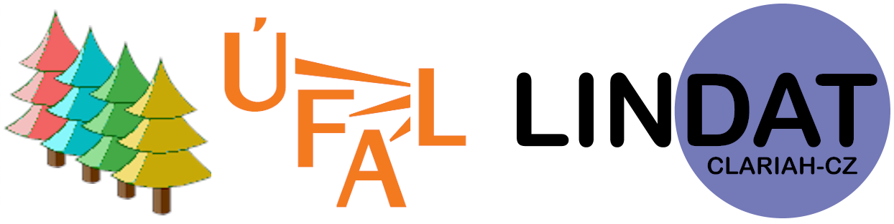

|  | Prague Dependency Treebank – Consolidated 1.0 (PDT-C 1.0) |
Hajič Jan, Bejček Eduard, Hlaváčová Jaroslava, Mikulová Marie, Straka Milan, Štěpánek Jan, Štěpánková Barbora: Prague Dependency Treebank - Consolidated 1.0. In: Proceedings of the 12th International Conference on Language Resources and Evaluation (LREC 2020), European Language Resources Association, Marseille, France, ISBN 979-10-95546-34-4, pp. 5208-5218, 2020. (pdf)
Hajič Jan, Panevová Jarmila, Buráňová Eva, Urešová Zdeňka, Bémová Alla, Štěpánek Jan, Pajas Petr, Kárník Jiří: Annotations at Analytical Level. Instructions for annotators. Institute of Formal and Applied Linguistics, Charles University, Prague, Czechia, 1999. (pdf)
Mikulová Marie: Speech reconstruction guidelines for Czech data. Translation of manual in Czech: Marie Mikulová: Rekonstrukce standardizovaného textu z mluvené řeči. Manuál pro anotátory. Institute of Formal and Applied Linguistics, Charles University, Prague, Czechia, 2008. (pdf)
Mikulová Marie, Bémová Alevtina, Hajič Jan, Hajičová Eva, Havelka Jiří, Kolářová Veronika, Kučová Lucie, Lopatková Markéta, Pajas Petr, Panevová Jarmila, Razímová Magda, Sgall Petr, Štěpánek Jan, Urešová Zdeňka, Veselá Kateřina, Žabokrtský Zdeněk: Annotation on the tectogrammatical layer in the Prague Dependency Treebank. Annotation manual. Technical report no. TR-2006-30, Institute of Formal and Applied Linguistics, Charles University, Prague, Czechia, ISSN 1214-5521, 2006. (pdf).
Mikulová Marie, Bejček Eduard, Mírovský Jiří, Nedoluzhko Anna, Panevová Jarmila, Poláková Lucie, Straňák Pavel, Ševčíková Magda, Žabokrtský Zdeněk: From PDT 2.0 to PDT 3.0 (Modifications and Complements). Technical report no. TR-2013-54, Institute of Formal and Applied Linguistics, Charles University, Prague, Czechia, 2013. (pdf)
Mikulová Marie, Hajič Jan, Hana Jiří, Hanová Hana, Hlaváčová Jaroslava, Štěpánková Barbora, Zeman Daniel: Manual for Morphological Annotation, Revision for the Prague Dependency Treebank - Consolidated 1.0. Technical report no. TR-2020-64, Institute of Formal and Applied Linguistics, Charles University, Prague, Czechia, 2020. (pdf)
Hajič Jan: Disambiguation of Rich Inflection (Computational Morphology of Czech), Karolinum, Prague, Czechia, 2004.
Hajič Jan: Morphological Tagging: Data Vs. Dictionaries. In: Proceedings of the 6th Applied Natural Language Processing and the 1st NAACL Conference, Seattle, Washington, pp. 94–101, 2000. (pdf)
Hajič Jan, Vidová Hladká Barbora: Tagging Inflective Languages: Prediction of Morphological Categories for a Rich, Structured Tagset. In: Proceedings of the COLING - ACL Conference, Montreal, Canada, pp. 483–490, 1998. (pdf)
Hlaváčová Jaroslava: Aggregates and Variants in two Czech morphological approaches. In: Proceedings of the 19th Conference ITAT 2019: Slovensko-český NLP workshop (SloNLP 2019), CreateSpace Independent Publishing Platform, Košice, Slovakia, ISSN 1613-0073, pp. 120-124, 2019. (pdf)
Hlaváčová Jaroslava: Golden Rule of Morphology and Variants of Wordforms. Jazykovedný časopis / Journal of Linguistics, Vol. 68, No. 2, Slovakia, ISSN 0021-5597, pp. 136-144, 2017. (pdf)
Hlaváčová Jaroslava: Formalizace systému české morfologie s ohledem na automatické zpracování českých textů. Ph.D. thesis, FF UK, Prague, Czechia, 2009. (pdf)
Hlaváčová Jaroslava, Mikulová Marie, Štěpánková Barbora, Hajič Jan: Modifications of the Czech morphological dictionary for consistent corpus annotation. Jazykovedný časopis / Journal of Linguistics, Vol. 70, No. 2, Slovakia, ISSN 0021-5597, pp. 380-389, 2019. (pdf)
Mikulová Marie, Hajič Jan, Hana Jiří, Hanová Hana, Hlaváčová Jaroslava, Štěpánková Barbora, Zeman Daniel: Manual for Morphological Annotation, Revision for the Prague Dependency Treebank - Consolidated 1.0. Technical report no. TR-2020-64, Institute of Formal and Applied Linguistics, Charles University, Prague, Czechia, 2020. (pdf)
Štěpánková Barbora, Mikulová Marie, Hajič Jan: The MorfFlex Dictionary of Czech as a Source of Linguistic Data. In: Proceedings of XIX EURALEX Congress: Lexicography for Inclusion, Democritus University of Thrace, Thrace, Greece, ISBN 978-618-85138-1-5, ISSN 2521-7100, pp. 387-392, 2020. (pdf)
Vidová Hladká Barbora: Czech Language Tagging. Institute of Formal and Applied Linguistics, Charles University, Prague, Czechia, 2000. (pdf)
Hajič Jan, Hajičová Eva: Syntactic Tagging in the Prague Dependency Treebank. In: Proceedings of the Second European Seminar "Language Applications for a Multilingual Europe," TELRI, Kaunas, Lithuania, pp. 55–68, 1997. (pdf)
Hajič Jan, Panevová Jarmila, Buráňová Eva, Urešová Zdeňka, Bémová Alla, Štěpánek Jan, Pajas Petr, Kárník Jiří: Annotations at Analytical Level. Instructions for annotators. Institute of Formal and Applied Linguistics, Charles University, Prague, Czechia, 1999. (pdf)
Hajič Jan, Panevová Jarmila, Buráňová Eva, Urešová Zdeňka, Bémová Alevtina, Štěpánek Jan, Pajas Petr, Kárník Jiří: Anotace na analytické rovině. Návod pro anotátory. Technical report, Institute of Formal and Applied Linguistics, Charles University, Prague, Czechia, ISSN 1214-5521, 1999. (pdf)
Lopatková Markéta, Homola Petr, Klyueva Natalia: Annotation of sentence structure: Capturing the relationship between clauses in Czech sentences. In: Language Resources and Evaluation, Vol. 46, No. 1, Springer Netherlands, pp. 25-36, ISSN 1574-020X, 2012.
Böhmová Alena, Hajičová Eva: Large Language Data and the Degrees of Automation,. In: Proceedings of XVII International Congress of Linguists, CD-ROM, Matfyzpress, Prague, Czechia, 2003. (pdf)
Böhmová Alena, Panevová Jarmila, Sgall Petr: Syntactic Tagging: Procedure for the Transition from the Analytic to the Tectogrammatical Tree Structure. In: Proceedings of the 3rd International Conference on Text, Speech and Dialogue, Springer-Verlag Berlin Heidelberg New York, pp. 34–38, 2000. (pdf)
Böhmová Alena, Sgall Petr: Automatic Procedures in Tectogrammatical Tagging. In: Proceedings of the Workshop on Linguistically Interpreted Corpora, 18th International Conference on Computational Linguistics, Saarbrucken, Germany, pp. 65–70, 2000. (pdf)
Cinková Silvie, Kolářová (Řezníčková) Veronika: Nouns as Components of Support Verb Constructions in the Prague Dependency Treebank. In: Korpusy a korpusová lingvistika v zahraničí a na Slovensku, 2004. (pdf)
Hajič Jan: Complex Corpus Annotation: The Prague Dependency Treebank. Jazykovedný ústav L. Štúra, SAV, Bratislava, Slovakia, 2004. (pdf)
Hajič Jan: Building a Syntactically Annotated Corpus: The Prague Dependency Treebank. In: Issues of Valency and Meaning. Studies in Honour of Jarmila Panevová, Karolinum, Prague, Czechia, pp. 106–132, 1998. (pdf)
Hajič Jan, Böhmová Alena, Hajičová Eva, Vidová Hladká Barbora: The Prague Dependency Treebank: A Three-Level Annotation Scenario. In: Treebanks: Building and Using Parsed Corpora, Kluwer, Amsterdam, pp. 103–127, 2000. (pdf)
Hajič Jan, Hajičová Eva, Mikulová Marie, Mírovský Jiří, Panevová Jarmila, Zeman Daniel: Deletions and node reconstructions in a dependency-based mutlilevel annotation scheme. In: Lecture Notes in Computer Science, 16th International Conference on Computational Linguistics and Intelligent Text Processing, Vol. 9041, Springer, Berlin / Heidelberg, ISBN 978-3-319-18111-0, ISSN 0302-9743, pp. 17-31, 2015. (pdf)
Hajič Jan, Vidová Hladká Barbora, Pajas Petr: The Prague Dependency Treebank: Annotation Structure and Support. In: Proceedings of the IRCS Workshop on Linguistic Databases, University of Pennsylvania, Philadelphia, USA, pp. 105–114, 2001. (pdf)
Hajičová Eva: Dependency-Based Underlying-Structure Tagging of a Very Large Czech Corpus, Special Issue of TAL Journal, Grammaires De Dépendence / Dependency Grammars, pp. 57–78, 2000. (pdf)
Hajičová Eva: Prague Dependency Treebank: From Analytic to Tectogrammatical Annotations. In: Proceedings of the 2nd International Conference on Text, Speech and Dialogue, Springer-Verlag Berlin Heidelberg New York, pp. 45–50, 1998. (pdf)
Hajičová Eva, Mikulová Marie, Panevová Jarmila: Reconstruction of Deletions in a Dependency-based Description of Czech: Selected Issues. In: Proceedings of the Third International Conference on Dependency Linguistics (Depling 2015), Uppsala University, Uppsala, Sweden, ISBN 978-91-637-8965-6, pp. 131-140, 2015. (pdf)
Hajičová Eva, Pajas Petr: Evaluation of Tectogrammatical Annotation of PDT. In: Proceedings of the 4th International Conference on Text, Speech and Dialogue, Springer-Verlag Berlin Heidelberg New York, pp. 75–80, 2000. (pdf)
Hajičová Eva, Pajas Petr, Veselá Kateřina: Corpus Annotation on the Tectogrammatical Layer: Summarizing the First Stages of Evaluations. Prague Bulletin of Mathematical Linguistics, pp. 5–18, 2002. (pdf)
Kolářová (Řezníčková) Veronika: PDT: Two Steps in Tectogrammatical Annotation with Respect to Some Issues of Deletion. Prague Bulletin of Mathematical Linguistics, pp. 37–52, 2002. (pdf)
Kuboň Vladislav, Lopatková Markéta, Mírovský Jiří: Analysis of Coordinating Constructions in a Dependency Treebank. In: Proceedings of the Twenty-Eighth International Florida Artificial Intelligence Research Society Conference, FLAIRS 2015, AAAI Press, Palo Alto, CA, USA, ISBN 978-1-57735-730-8, pp. 546-551, 2015. (pdf)
Mikulová Marie: Semantic Representation of Ellipsis in the Prague Dependency Treebanks. In: Proceedings of the Twenty-Sixth Conference on Computational Linguistics and Speech Processing ROCLING XXVI (2014), Association for Computational Linguistics and Chinese Language Processing (ACLCLP), Taipei, Taiwan, ISBN 978-957-30792-7-9, pp. 125-138, 2014. (pdf)
Mikulová Marie: Annotation on the tectogrammatical level. Additions to annotation manual (with respect to PDTSC and PCEDT). Technical report no. TR-2013-52, Institute of Formal and Applied Linguistics, Charles University, Prague, Czechia, 2013. (pdf)
Mikulová Marie: Významová reprezentace elipsy. Institute of Formal and Applied Linguistics, Charles University, Prague, Czechia, ISBN 978-80-904175-9-5, 2011.
Mikulová Marie, Bejček Eduard, Mírovský Jiří, Nedoluzhko Anna, Panevová Jarmila, Poláková Lucie, Straňák Pavel, Ševčíková Magda, Žabokrtský Zdeněk: From PDT 2.0 to PDT 3.0 (Modifications and Complements). Technical report no. TR-2013-54, Institute of Formal and Applied Linguistics, Charles University, Prague, Czechia, 2013. (pdf)
Mikulová Marie, Bémová Alevtina, Hajič Jan, Hajičová Eva, Havelka Jiří, Kolářová Veronika, Kučová Lucie, Lopatková Markéta, Pajas Petr, Panevová Jarmila, Razímová Magda, Sgall Petr, Štěpánek Jan, Urešová Zdeňka, Veselá Kateřina, Žabokrtský Zdeněk: Annotation on the tectogrammatical layer in the Prague Dependency Treebank. Annotation manual. Technical report no. TR-2006-30, Institute of Formal and Applied Linguistics, Charles University, Prague, Czechia, ISSN 1214-5521, 2006. (pdf).
Mikulová Marie, Bémová Alevtina, Hajič Jan, Hajičová Eva, Havelka Jiří, Kolářová Veronika, Kučová Lucie, Lopatková Markéta, Pajas Petr, Panevová Jarmila, Razímová Magda, Sgall Petr, Štěpánek Jan, Urešová Zdeňka, Veselá Kateřina, Žabokrtský Zdeněk: Anotace Pražského Závislostního Korpusu Na Tektogramatické Rovine: Pokyny Pro Anotátory. Institute of Formal and Applied Linguistics, Charles University, Prague, Czechia, 2005. (pdf)
Panevová Jarmila: Koordinace versus determinace (Forma nebo význam?). Korpus – gramatika – axiologie, Vol. 4, No. 10, Czechia, ISSN 1804-137X, pp. 47-56, 2014.
Panevová Jarmila.: On Syntax and Semantics of Czech Infinitival Constructions: A Case Study. In: Slovo i jazyk. Sbornik statej k vosmidesjatiletiju akademika Ju. D. Apresjana. Jazyki slavjanskich kul’tur, Moskva, pp. 541 – 551, 2011.
Panevová Jarmila: Infinitiv ve funkci atributu. In: Kapitoly z české gramatiky (ed. F. Štícha), Academia, Prague, Czechia, pp. 945 – 960, 2011.
Panevová Jarmila: „Být posel dobrých zpráv je mi příjemné“ (Několik poznámek k infinitivním konstrukcím). In: Karlík a továrna na lingvistiku. Prof. Petru Karlíkovi k 60. narozeninám, Host/Masarykova univerzita, Brno, Czechia, pp. 345 – 354, 2010.
Panevová Jarmila, Hajičová Eva, Sgall Petr: Tectogrammatics in Corpus Tagging. In: Perspectives on Semantics, Pragmatics, and Discourse; A Festschrift for Ferenc Kiefer (Pragmatics and Beyond New Series), John Benjamins, Amsterdam/Philadelphia, pp. 294–299, 2001. (pdf)
Panevová Jarmila, Kolářová (Řezníčková) Veronika, Urešová Zdeňka: The Theory of Control Applied to the Prague Dependency Treebank (PDT). In: Proceedings of the 6th International Workshop on Tree Adjoining Grammars and Related Frameworks (TAG+6), Università di Venezia, Venezia, Italy, pp. 175–180, 2002. (pdf)
Panevová Jarmila, Mikulová Marie: Problém elipsy: Co s ním a kam s ním? Prace Filologiczne, Vol. 60, Poland, ISSN 0138-0567, pp. 225-232, 2011.
Panevová Jarmila, Mikulová Marie: On Reciprocity. The Prague Bulletin of Mathematical Linguistics, pp. 27–40, 2007. (pdf)
Sgall Petr, Panevová Jarmila, Hajičová Eva: Deep Syntactic Annotation: Tectogrammatical Representation and Beyond. In: Proceedings of the HLT-NAACL 2004 Workshop: Frontiers in Corpus Annotation, Association for Computational Linguistics, Boston, Massachusetts, USA, pp. 32–38, 2004. (pdf)
Štěpánek Jan: Post-annotation Checking of Prague Dependency Treebank 2.0 Data. In: Text, Speech and Dialogue. 9th International Conference, TSD 2006, Brno, pp. 277–284, 2006.
Štěpánek Jan: Post-annotation checking of Prague Dependency Treebank 2.0 data. The Prague Bulletin of Mathematical Linguistics, No. 85, ISSN 0032-6585, pp. 23-33, 2006. (pdf)
Štěpánek Jan: Závislostní zachycení vetné struktury v anotovaném syntaktickém korpusu (nástroje pro zajištění konzistence dat). Institute of Formal and Applied Linguistics, Charles University, Prague, Czechia, 2006. (pdf)
Vidová Hladká Barbora: Pražský závislostní korpus aneb Co tady před padesáti lety nebylo. Pokroky Matematiky, Fyziky a Astronomie, 4, pp. 298–306, 2002. (pdf)
Žabokrtský Zdeněk, Sgall Petr, Džeroski Sašo: A Machine Learning Approach to Automatic Functor Assignment in the Prague Dependency Treebank. In: Proceedings of the 3rd International Conference on Language Resources and Evaluation, European Language Resources Association, pp. 1513–1520, 2002. (pdf)
Čech Radek, Mačutek Ján, Pajas Petr: Full Valency. Verb Valency Without Distinguishing Complements and Adjuncts. Journal of Quantitative Linguistics, 17, pp. 291–302, 2010.
Hajič Jan, Honetschläger Václav: Annotation Lexicons: Using the Valency Lexicon for Tectogrammatical Annotation, Prague Bulletin of Mathematical Linguistics, pp. 61–86, 2003. (pdf)
Hajič Jan, Panevová Jarmila, Urešová Zdeňka, Bémová Alevtina, Kolářová Veronika, Pajas Petr: PDT-VALLEX: Creating a Large-coverage Valency Lexicon for Treebank Annotation. In: Proceedings of The Second Workshop on Treebanks and Linguistic Theories, Växjö University Press, Växjö, Sweden, pp. 57–68, 2003. (pdf)
Hajič Jan, Urešová Zdeňka: Linguistic Annotation: From Links to Cross-Layer Lexicons. In: Proceedings of The Second Workshop on Treebanks and Linguistic Theories, Växjö University Press, Växjö, Sweden, pp. 69–80, 2003. (pdf)
Hajičová Eva, Panevová Jarmila: Valency (case) Frames. In: Contributions to Functional Syntax, Semantics and Language Comprehension, Academia, Prague, Czechia, pp. 147–188, 1984.
Honetschläger Václav: Using a Czech Valency Lexicon for Annotation Support. In: Proceedings of the 7th International Conference on Text, Speech and Dialogue, Springer-Verlag Berlin Heidelberg New York, pp. 120–126, 2003. (pdf)
Kettnerová Václava, Lopatková Markéta, Bejček Eduard, Vernerová Anna, Podobová Marie: Corpus Based Identification of Czech Light Verbs. In: Proceedings of the Seventh International Conference Slovko 2013; Natural Language Processing, Corpus Linguistics, E-learning, RAM-Verlag, Lüdenscheid, Germany, ISBN 978-3-942303-18-7, pp. 118-128, 2013. (pdf)
Kolářová Veronika: Special valency behavior of Czech deverbal nouns. In: Noun Valency, John Benjamins Publishing Company, Amsterdam, The Netherlands, ISBN 9789027259233, pp. 19-60, 2014.
Kolářová Veronika: Valence vybraných typů deverbativních substantiv ve valenčním slovníku PDT-Vallex. Technical report no. TR-2014-56, Institute of Formal and Applied Linguistics, Charles University, Prague, Czechia, ISSN 1214-5521, 2014. (pdf)
Kolářová Veronika: Adverbální předmětový genitiv a jeho protějšky v nominálních konstrukcích: Případ posesiva. In: Zborník Filozofickej fakulty Univerzity Komenského, Philologica LXXII, Slovo a tvar v štruktúre a komunikácii, Univerzita Komenského, Bratislava, Slovakia, ISBN 978-80-223-3562-1, pp. 411-421, 2013. (pdf)
Kolářová Veronika: Agents Expressed by Prepositionless Instrumental Modifying Czech Nouns Derived from Intransitive Verbs. In: Proceedings of the Seventh International Conference Slovko 2013; Natural Language Processing, Corpus Linguistics, E-learning, RAM-Verlag, Lüdenscheid, Germany, ISBN 978-3-942303-18-7, pp. 129-147, 2013. (pdf)
Kolářová Veronika: Valence dejových substantiv odvozených od sloves s predmetovým genitivem. In: Ceština v pohledu synchronním a diachronním. Stoleté koreny Ústavu pro jazyk ceský, Karolinum, Prague, Czechia, ISBN 978-80-246-2121-0, pp. 609-614, 2012.(pdf)
Kolářová Veronika: Valence deverbativních substantiv v češtině (na materiálu substantiv s dativní valencí). Karolinum, Prague, Czechia, ISBN 978-80-246-1828-9, 2010.
Kolářová Veronika, Vernerová Anna, Klímová Jana, Kolář Jan: Possible but not probable: A quantitative analysis of valency behaviour of Czech nouns in the Prague Dependency Treebank. Jazykovedný časopis / Journal of Linguistics, Vol. 68, No. 2, ISSN 0021-5597, pp. 208-218, 2017.
Lopatková Markéta, Panevová Jarmila: Recent Developments of the Theory of Valency in the Light of the Prague Dependency Treebank. Veda, Bratislava, Slovakia, pp. 83–92, 2005. (pdf)
Mikulová Marie, Štěpánek Jan, Urešová Zdeňka: Liší se mluvené a psané texty ve valenci? Korpus – gramatika – axiologie, No. 8, pp. 36-46, 2013. (pdf).
Ondruška Roman, Panevová Jarmila, Štěpánek Jan: An Exploitation of the Prague Dependency Treebank: A Valency Case. In: Proceedings of the Workshop on Shallow Processing of Large Corpora, UCREL, Lancaster University, Lancaster, Great Britain, pp. 69–77, 2003. (pdf)
Panevová Jarmila: On Verbal Frames in Functional Generative Description II. Prague Bulletin of Mathematical Linguistics, pp. 17–52, 1975. (pdf)
Panevová Jarmila: On Verbal Frames in Functional Generative Description I. Prague Bulletin of Mathematical Linguistics, pp. 3–40, 1974. (pdf)
Panevová Jarmila: Od valence slovesa k valenci substantiv a adjektiv. Prace Filologiczne, Vol. 70, Poland, ISSN 0138-0567, pp. 59-71, 2017. (pdf)
Panevová Jarmila: In favour of the Argument-Adjunct Distinction (from the Perspective of FGD). The Prague Bulletin of Mathematical Linguistics, No. 106, ISSN 0032-6585, pp. 21-30, 2016. (pdf)
Panevová Jarmila: Valence v gramatice, valence ve slovníku. In: Výzkum slovesné valence ve slovanských zemích, Slovanský ústav AV CR, Prague, Czechia, ISBN 978-80-86420-60-8, pp. 13-25, 2016.
Panevová Jarmila: Contribution of Valency to the Analysis of Language. In: Noun Valency, John Benjamins Publishing Company, Amsterdam, The Netherlands, ISBN 9789027259233, pp. 1-18, 2014.
Panevová Jarmila: Vybrané problémy ze slovesné valence. In: Kapitoly z české gramatiky, Academia, Prague, Czechia, ISBN 978-80-200-1845-8, pp. 913-920, 2011.
Przepiórkowski Adam, Hajič Jan, Hajnicz Elźbieta, Urešová Zdeňka: Phraseology in two Slavic valency dictionaries: limitations and perspectives. International Journal of Lexicography, Vol. 30, No. 1, ISSN 0950-3846, pp. 1-38, 2016. (pdf)
Sgall Petr: Valence jako jádro jazykového systému. Slovo a Slovesnost, 67, pp. 163–178, 2006. (pdf)
Sgall Petr: Valency and Underlying Structure. An Alternative View on Dependency. In: Recent Trends in Meaning-text Theory, Benjamins, Amsterdam/Philadelphia, pp. 149–166, 1997.
Urešová Zdeňka, Bejček Eduard, Hajič Jan: Inherently Pronominal Verbs in Czech: Description and Conversion Based on Treebank Annotation. In: Proceedings of the 12th Workshop on Multiword Expressions (ACL 2016), Association for Computational Linguistics (ACL), Stroudsburg, PA, USA, ISBN 978-1-945626-06-7, pp. 78-83, 2016. (pdf)
Urešová Zdeňka, Fučíková Eva, Hajič Jan: Non-projectivity and valency. In: Proceedings of the 2016 Conference of the North American Chapter of the Association for Computational Linguistics: Workshop on Discontinuous Structures in Natural Language Processing (DiscoNLP), Association for Computational Linguistics (ACL), Stroudsburg, PA, USA, ISBN 978-1-941643-85-3, pp. 12-21, 2016. (pdf)
Urešová Zdeňka: Building the PDT-VALLEX valency lexicon. In: Proceedings of the fifth Corpus Linguistics Conference, University of Liverpool, Liverpool, Great Britain, pp. 1-18, 2012. (pdf)
Urešová Zdeňka: Valenční slovník Pražského závislostního korpusu (PDT-Vallex). Institute of Formal and Applied Linguistics, Charles University, Prague, Czechia, ISBN 978-80-904571-1-9, 2011.
Urešová Zdeňka: Valence sloves v Pražském závislostním korpusu. Institute of Formal and Applied Linguistics, Charles University, Prague, Czechia, ISBN 978-80-904571-0-2, 2011. (pdf)
Urešová Zdeňka: PDT-Vallex - Trochu jiný valenční slovník. In: Slovo – Tvorba – Dynamickost. Na Pocest Kláry Buzássyovej, pp. 278–286, 2010. (pdf)
Urešová Zdeňka: Verbal Valency in the Prague Dependency Treebank from the Annotator's Viewpoint. In: Insight into Slovak and Czech Corpus Linguistics, Veda, Bratislava, Slovakia, pp. 93–112, 2006. (pdf)
Urešová Zdeňka, Pajas Petr: Diatheses in the Czech Valency Lexicon PDT-Vallex. In: Slovko 2009, NLP, Corpus Linguistics, Corpus Based Grammar Research, Slovenská akadémia vied, Bratislava, Slovakia, ISBN 978-80-7399-875-2, pp. 358-376, 2009. (pdf)
Žabokrtský Zdeněk: Valency Lexicon of Czech Verbs. Institute of Formal and Applied Linguistics, Charles University, Prague, Czechia, 2005. (pdf)
Panevová Jarmila: O rezultativnosti (zejména) v češtině. In: Gramatika i leksika u slovenskim jezicina. Matica Srbska, Institut za srpski jezik, Novi Sad, Beograd, pp. 165 – 176, 2011.
Panevová Jarmila, Ševčíková Magda: Delimitation of Information between Grammatical Rules and Lexicon. In: Linguistic Aspects of Dependency. John Benjamins, Amsterdam/the Netherland, pp.1- 20, 2013.
Panevová Jarmila, Ševčíková Magda: The Role of Grammatical Constraints in Lexical Komponent in Functional Generative Description. In: Proceedings of the 6th International Conference on Meaning-Text Theory. Prague, Czechia, pp. 134-143, 2013. (pdf)
Panevová Jarmila, Ševčíková Magda: Delimitation of information between grammatical rules and lexicon. In: Proceedings of the International Conference on Dependency Linguistics (Depling 2011), Universitat Pompeu Fabra, Barcelona, pp. 173–182. ISBN 978-84-615-1834-0, 2011. (pdf)
Panevová Jarmila, Ševčíková Magda: Jak se počítají substantiva v češtině: poznámky ke kategorii čísla. Slovo a slovesnost, 72, pp. 163–176. ISSN 0037-7031, 2011. (pdf)
Panevová Jarmila, Ševčíková Magda: Annotation of Morphological Meanings of Verbs Revisited. In: Proceedings of the 7th International Conference on Language Resources and Evaluation (LREC 2010). ELRA, Valletta, pp. 1491–1498. ISBN 2-9517408-6-7, 2010. (pdf)
Razímová Magda, Žabokrtský Zdeněk: Annotation of Grammatemes in the Prague Dependency Treebank 2.0. In: Proceedings of the LREC Workshop on Annotation Science, pp. 12–19, 2006. (pdf)
Ševčíková Magda: Morphology within the Multi-Layered Annotation Scenario of the Prague Dependency Treebank. In: Systems and Frameworks for Computational Morphology, Fourth International Workshop, SFCM 2015, Stuttgart, Germany, Springer, Berlin / Heidelberg, ISBN 978-3-319-23978-1, ISSN 1865-0929, pp. 1-26, 2015. (pdf)
Ševčíková Magda: Česká adverbia s příponou -o v teoretickém popisu a v syntakticky anotovaném korpusu. In: Zborník Filozofickej fakulty Univerzity Komenského, Philologica LXXII, Slovo a tvar v štruktúre a komunikácii, Univerzita Komenského, Bratislava, Slovakia, ISBN 978-80-223-3562-1, pp. 365-374, 2013. (pdf)
Ševčíková Magda: Deadjektivní deriváty v češtině jako deriváty syntaktické vs. lexikální. In: Gramatika a korpus / Grammar and Corpora 2012, Gaudeamus, Hradec Králové, Czechia, ISBN 978-80-7435-243-0, pp. 1-8, 2013.
Ševčíková Magda: Predikativum v gramatickém popisu češtiny. In: Čeština v pohledu synchronním a diachronním. Stoleté kořeny Ústavu pro jazyk český, Karolinum, Prague, Czechia, ISBN 978-80-246-2121-0, pp. 597-602, 2012. (pdf)
Ševčíková Magda: Funkce kondicionálu z hlediska významové roviny. Institute of Formal and Applied Linguistics, Charles University, Prague, Czechia, ISBN 978-80-904175-2-6, 2010.
Ševčíková Magda: Kondicionál přítomný jako součást explicitních performativních formulí. Korpus – gramatika – axiologie, Vol. 1, No. 1, pp. 41–62, ISSN 1804-137X, 2010. (pdf)
Ševčíková Magda: The meaning of the conditional mood within the tectogrammatical annotation of Prague Dependency Treebank 2.0. In: Proceedings of the Slovko 2009 Conference: NLP, Corpus Linguistics, Corpus Based Grammar Research, Slovenská akadémia vied, Bratislava, Slovakia, pp. 321–330, ISBN 978-80-7399-875-2, 2009. (pdf)
Ševčíková Magda, Mírovský Jiří: Sentence Modality Assignment in the Prague Dependency Treebank. In: Proceedings of the 15th International Conference Text, Speech and Dialogue (TSD 2012). Springer, Berlin, pp. 56–63, ISBN 978-3-642-32789-6, ISSN 0302-9743, 2012. (pdf)
Ševčíková Magda, Panevová Jarmila, Smejkalová Lenka: Specificity of the number of nouns in Czech and its annotation in Prague Dependency Treebank. The Prague Bulletin of Mathematical Linguistics, 96, pp. 27–47, ISSN 0032-6585, 2011. (pdf)
Ševčíková Magda, Panevová Jarmila, Žabokrtský Zdeněk: Grammatical number of nouns in Czech: linguistic theory and treebank annotation. In: Proceedings of the Ninth International Workshop on Treebanks and Linguistic Theories (TLT 2010), NEALT Proceedings Series, Vol. 9. Tartu, Estonia, pp. 211–222. ISSN 1736-8197, 2010. (pdf)
Ševčíková (Razímová) Magda, Žabokrtský Zdeněk: Systematic Parameterized Description of Pro-forms in the Prague Dependency Treebank 2.0. In: Proceedings of the Fifth Workshop on Treebanks and Linguistic Theories (TLT), pp. 175–186, 2006. (pdf)
Hajičová Eva: Theme. In Oxford Research Encyclopedias: Linguistics, Oxford University Press, Oxford, United Kingdom, ISBN 9780199384655, pp. 1-10, 2017.
Hajičová Eva: On scalarity in information structure. Linguistica Pragensia, Vol. XXII, No. 2, ISSN 0862-8432, pp. 60-78, 2012. (pdf)
Hajičová Eva: Topic-Focus revisited (Through the eyes of the Prague Dependency Treebank). In: Смыслы, тексты и другие захватывающие сюжеты. Сборник статей в честь 80-летия Игоря Александровича Мельчука, Языкы славянской культуры, Moscow, Russia, ISBN 978-5-9551-0593-2, pp. 218-232, 2012. (pdf)
Hajičová Eva: What we have learned from complex annotation of topic-focus articulation in a large Czech corpus. In: Écho des études romanes, Vol. II, Université de Bohême du Sud, České Budějovice, Czechia, ISSN 1801-0865, pp. 51-64, 2012. (pdf)
Hajičová Eva: Rhematizers Revisited. Linguistica Pragensia, Vol. XX, No. 2, ISSN 0862-8432, pp. 57-70, 2010. (pdf)
Hajičová Eva, Havelka Jiří, Sgall Petr, Veselá Kateřina, Zeman Daniel: Issues of Projectivity in the Prague Dependency Treebank, Prague Bulletin of Mathematical Linguistics, pp. 5–22, 2004. (pdf)
Hajičová Eva, Mírovský Jiří: Různé pojetí dichotomie v informační struktuře věty ve světle anotovaného korpusu. In: Svět podle Grepla, Host, Brno, Czechia, ISBN 978-80-7577-810-9, pp. 23-34, 2019. (pdf)
Hajičová Eva, Mírovský Jiří, Rysová Kateřina: Ordering of Adverbials of Time and Place in Grammars and in an Annotated English–Czech Parallel Corpus. In: Proceedings of the 18th International Workshop on Treebanks and Linguistic Theories (TLT, SyntaxFest 2019), Association for Computational Linguistics, Paris, France, ISBN 978-1-950737-64-2, pp. 51-60, 2019. (pdf)
Hajičová Eva, Partee Barbara H., Sgall Petr: Topic-focus Articulation, Tripartite Structures, and Semantic Content. Kluwer, Amsterdam, 1998.
Hajičová Eva, Sgall Petr: Degrees of Contrast and the Topic-Focus Articulation. Walter de Gruyter, Berlin, pp. 1–13, 2004. (pdf)
Hajičová Eva, Sgall Petr, Buráňová Eva: Topic-Focus Articulation and Degrees of Salience in the Prague Dependency Treebank. In: Formal Approaches to Function in Grammar. In Honor of Eloise Jelinek, Arizona, John Benjamins, Amsterdam/Philadelphia, pp. 165–177, 2003. (pdf)
Hajičová Eva, Petr Sgall Petr, Buráňová Eva: Tagging of Very Large Corpora: Topic-Focus Articulation. In: Proceedings of the 18th International Conference on Computational Linguistics, Saarbrucken, Germany, pp. 139–144, 2000.
Kuboň Vladislav, Lopatková Markéta: Word-Order Analysis Based Upon Treebank Data. In: MICAI 2015: Advances in Artificial Intelligence and Soft Computing, Part I, Springer, Berlin / Heidelberg, ISBN 978-3-319-27059-3, ISSN 0302-9743, pp. 47-58, 2015. (pdf)
Kučová Lucie, Hajičová Eva, Veselá Kateřina, Havelka Jiří: Topic-focus Articulation and Anaphoric Relations: A Corpus Based Probe. Prague Bulletin of Mathematical Linguistics, pp. 5–12, 2005. (pdf)
Rysová Kateřina: O slovosledu z komunikačního pohledu. Institute of Formal and Applied Linguistics, Charles University, Prague, Czechia, ISBN 978-80-904571-5-7, 2014.(pdf)
Rysová Kateřina: On the word order of Actor and Patient in Czech. In: Dependency Linguistics. Recent advances in linguistic theory using dependency structures, John Benjamins Publishing Company, Amsterdam, The Netherlands, ISBN 978-9027255983, pp. 253-271, 2014.
Rysová Kateřina: K subjektivnímu slovosledu na základě korpusu. Didaktické studie, Vol. 5, No. 2, Czechia, ISSN 1804-1221, pp. 20-38, 2013. (pdf)
Rysová Kateřina: The Word Order of Inner Participants in Czech, Considering the Systemic Ordering of Actor and Patient. In: Proceedings of the International Conference on Dependency Linguistics (Depling 2011), Universitat Pompeu Fabra, Barcelona, Spain, ISBN 978-84-615-1834-0, pp. 183-192, 2011. (pdf)
Rysová Kateřina, Mírovský Jiří: Valency and Word Order in Czech - A Corpus Probe. In: Proceedings of the 9th International Conference on Language Resources and Evaluation (LREC 2014), European Language Resources Association, Reykjavík, Iceland, ISBN 978-2-9517408-8-4, pp. 975-980, 2014. (pdf)
Rysová Kateřina, Mírovský Jiří, Hajičová Eva: On an apparent freedom of Czech word order. A case study. In: 14th International Workshop on Treebanks and Linguistic Theories (TLT 2015), IPIPAN, Warszawa, Poland, ISBN 978-83-63159-18-4, pp. 93-105, 2015. (pdf)
Rysová Kateřina, Rysová Magdaléna, Hajičová Eva: Topic–Focus Articulation in English Texts on the Basis of Functional Generative Description. Technical report no. TR 2015-59, Institute of Formal and Applied Linguistics, Charles University, Prague, Czechia, ISSN 1214-5521, 2015. (pdf)
Veselá Kateřina, Havelka Jiří: Anotování aktuálního členění věty v Pražském závislostním korpusu. Institute of Formal and Applied Linguistics, Charles University, Prague, Czechia, 2003. (pdf)
Veselá Kateřina, Havelka Jiří, Hajičová Eva: Annotators' Agreement: The Case of Topic-Focus Articulation. In: Proceedings of the 4th International Conference on Language Resources and Evaluation, European Language Resources Association, Lisboa, Portugal, pp. 2191–2194, 2004. (pdf)
Sgall Petr: Topic-Focus Articulation in Corpus Annotation. In: Natural Language Processing Between Linguistic Inquiry and System Engineering, Editura Universitatii Alexandru Ioan Cuza, Iasi, pp. 95–101, 2003. (pdf)
Hajičová Eva: The Prague Dependency Treebank: Crossing the Sentence Boundary. In: Proceedings of the 3rd International Conference on Text, Speech and Dialogue, Springer-Verlag Berlin Heidelberg New York, pp. 20–27, 1999. (pdf)
Kučová Lucie, Hajičová Eva: Coreferential Relations in the Prague Dependency Treebank. In: Proceedings of the 5th International Conference on Discourse Anaphora and Anaphor Resolution 2005, San Miguel, Azores, Spain, pp. 97–102, 2005. (pdf)
Kučová Lucie, Kolářová (Řezníčková) Veronika, Žabokrtský Zdeněk, Pajas Petr, Čulo Oliver: Anotování koreference v Pražském závislostním korpusu. Institute of Formal and Applied Linguistics, Charles University, Prague, Czechia, 2003. (pdf)
Mírovský Jiří, Pajas Petr, Nedoluzhko Anna: Annotation Tool for Extended Textual Coreference and Bridging Anaphora. In: Proceedings of the 7th International Conference on Language Resources and Evaluation (LREC 2010), European Language Resources Association, Valletta, Malta, ISBN 2-9517408-6-7, pp. 168-171, 2010. (pdf)
Nedoluzhko Anja: Generic noun phrases and annotation of coreference and bridging relations in the Prague Dependency Treebank. In: Proceedings of the 7th Linguistic Annotation Workshop & Interoperability with Discourse. Omnipress, Inc, Sofia, Bulgaria, pp. 103-111, ISBN 978-1-937284-58-9, 2013. (pdf)
Nedoluzhko Anja: Rozšířená textová koreference a asociační anafora. Koncepce anotace českých dat v Pražském závislostním korpusu. Institute of Formal and Applied Linguistics, Charles University, Prague, Czechia, ISBN 978-80-904571-2-6, 2011.
Nedoluzhko Anna, Lapshinova-Koltunski Ekaterina, Kunz Kerstin Anna: Across Languages and Genres: Creating a Universal Annotation Scheme for Textual Relations. In: Proceedings of the The 9th Linguistic Annotation Workshop (LAW IX 2015), Association for Computational Linguistics, Stroudsburg, PA, USA, ISBN 978-1-941643-47-1, pp. 168-177, 2015. (pdf)
Nedoluzhko Anna, Mírovský Jiří: Annotators’ Certainty and Disagreements in Coreference and Bridging Annotation in Prague Dependency Treebank. In: Proceedings of the Second International Conference on Dependency Linguistics, Depling 2013, Matfyzpress, Prague, Czechia, ISBN 978-80-7378-240-5, pp. 236-243, 2013. (pdf)
Nedoluzhko Anja, Mírovský Jiří: How Dependency Trees and Tectogrammatics Help Annotating Coreference and Bridging Relations in Prague Dependency Treebank. In: Proceedings of the Second International Conference on Dependency Linguistics, Depling 2013. Matfyzpress, Prague, Czechia, pp. 244-251, ISBN 978-80-7378-240-5, 2013. (pdf)
Nedoluzhko Anja, Mírovský Jiří: Annotating Extended Textual Coreference and Bridging Relations in the Prague Dependency Treebank. Annotation manual. Technical report No. 44, Institute of Formal and Applied Linguistics, Charles University, Prague, Czechia, 2011. (pdf)
Nedoluzhko Anna, Mírovský Jiří, Fučíková Eva, Pergler Jiří: Annotation of coreference in Prague Czech-English Dependency Treebank. Technical report no. TR-2014-57, Institute of Formal and Applied Linguistics, Charles University, Prague, Czechia, ISSN 1214-5521, 2014. (pdf)
Nedoluzhko Anja, Mírovský Jiří, Novák Michal: A Coreferentially annotated Corpus and Anaphora Resolution for Czech. In: Computational Linguistics and Intellectual Technologies. ABBYY, Moscow, Russia, pp. 467-475, ISBN 978-1-937284-58-9, 2013. (pdf)
Nedoluzhko Anna, Mírovský Jiří, Ocelák Radek, Pergler Jiří: Extended Coreferential Relations and Bridging Anaphora in the Prague Dependency Treebank. In: Proceedings of the 7th Discourse Anaphora and Anaphor Resolution Colloquium (DAARC 2009), AU-KBC Research Centre, Anna University, Chennai , Goa, India, ISBN 978-3-642-04974-3, pp. 1-16, 2009. (pdf)
Nedoluzhko Anna, Mírovský Jiří, Pajas Petr: The Coding Scheme for Annotating Extended Nominal Coreference and Bridging Anaphora in the Prague Dependency Treebank. In: Proceedings of the Third Linguistic Annotation Workshop (LAW III), Association for Computational Linguistics, Suntec, Singapore, ISBN 978-1-932432-52-7, pp. 108-111, 2009. (pdf)
Nguy Giang Linh, Novák Michal, Nedoluzhko Anna: Coreference Resolution in the Prague Dependency Treebank. Technical report no. TR-2011-43, Institute of Formal and Applied Linguistics, Charles University, Prague, Czechia, pp. 1-66, 2011. (pdf)
Nguy Giang Linh, Ševčíková Magda: Unstated Subject Identification in Czech. In: WDS'11 Proceedings of Contributed Papers, Part I, Matfyzpress, Prague, Czechia, ISBN 978-80-7378-184-2, pp. 149-154, 2011. (pdf)
Nguy Giang Linh, Žabokrtský Zdeněk: Coreference of Deletions – The Case of Control. In: Proceedings of the 5th International Conference on Meaning-Text Theory, Barcelona, September 8 – 9, 2011, Universitat Pompeu Fabra, Barcelona, Spain, ISBN 978-84-615-1716-9, pp. 186-195, 2011.
Novák Michal, Žabokrtský Zdeněk: Resolving Noun Phrase Coreference in Czech. In: Lecture Notes in Computer Science, Vol. 7099, Springer Verlag Heidelberg, Berlin / Heidelberg, ISSN 0302-9743, pp. 24-34, 2011.
Panevová Jarmila, Hajičová Eva, Sgall Petr: Coreference in Annotating a Large Corpus. In: Proceedings of the 2nd International Conference on Language Resources, Athens, Greece: European Language Resources Association, pp. 497–500, 2000. (pdf)
Rysová Kateřina, Rysová Magdaléna: Koreference a elipsa v Pražském závislostním korpusu. Korpus – gramatika – axiologie, Vol. 7, No. 13, Czechia, ISSN 1804-137X, pp. 35-47, 2016. (pdf)
Rysová Kateřina, Rysová Magdaléna: Analyzing Text Coherence via Multiple Annotation in the Prague Dependency Treebank. In: Lecture Notes in Computer Science, Text, Speech, and Dialogue: 18th International Conference, TSD 2015, No. 9302, Springer International Publishing, Cham / Heidelberg / New York / Dordrecht / London, ISBN 978-3-319-24032-9, ISSN 0302-9743, pp. 71-79, 2015. (pdf)
Hajičová Eva: Issues of Sentence Structure and Discourse Patterns. Charles University, Prague, Czechia, 1993.
Hajičová Eva, Mírovský Jiří: Discourse Coherence Through the Lens of an Annotated Text Corpus: A Case Study. In: Proceedings of the 11th International Conference on Language Resources and Evaluation (LREC 2018), European Language Resources Association, Paris, France, ISBN 979-10-95546-00-9, pp. 1637-1642, 2018. (pdf)
Hajičová Eva, Mírovský Jiří: Identification of Thematic Discourse Relations on the Data from an Annotated Corpus of Czech. In: TextLink – Structuring Discourse in Multilingual Europe – Final Action Conference, University of Toulouse, Toulouse, France, pp. 56-63, 2018. (pdf)
Čermáková Kristýna, Mladová Lucie, Fučíková Eva, Veselá Kateřina: Annotation of Selected Non-dependency Relations in a Dependency Treebank. In: Proceedings of 8th Treebanks and Linguistic Theories Workshop (TLT), Università Cattolica del Sacro Cuore, Milano, Italy, ISBN 978-88-8311-712-1, pp. 51-57, 2009. (pdf)
Jínová Pavlína: Nejčastější konektivní prostředky kauzálního vztahu v Pražském závislostním korpusu. Studie z aplikované lingvistiky / Studies in Applied Linguistics (SALi), Vol. 2012, No. 1, Charles University, Prague, Czechia, ISSN 1804-3240, pp. 35-52, 2012.
Jínová Pavlína: Vybrané problematické aspekty konektivních prostředků v rámci anotace mezivýpovědních významových vztahů v PDT. Bohemica Olomucensia, Vol. 2, University Palackého, Czechia, ISSN 1803-876X, pp. 138-147, 2011. (pdf)
Jínová Pavlína, Mírovský Jiří, Poláková Lucie: Semi-Automatic Annotation of Intra-Sentential Discourse Relations in PDT. In: Proceedings of the Workshop on Advances in Discourse Analysis and its Computational Aspects (ADACA) at Coling 2012, Coling 2012 Organizing Committee, Mumbai, India, pp. 43-58, 2012. (pdf)
Jínová Pavlína, Mladová Lucie, Mírovský Jiří: Sentence Structure and Discourse Structure: Possible Parallels. In: Proceedings of the International Conference on Dependency Linguistics (Depling 2011), Universitat Pompeu Fabra, Barcelona, Spain, ISBN 978-84-615-1834-0, pp. 233-240, 2011. (pdf)
Jínová Pavlína, Mírovský Jiří, Poláková Lucie: Analyzing the Most Common Errors in the Discourse Annotation of the Prague Dependency Treebank. In: Proceedings of the 11th International Workshop on Treebanks and Linguistic Theories, Edicoes Colibri, Lisboa, Portugal, pp. 127-132,ISBN 978-989-689-274-6, 2012. (pdf)
Jínová Pavlína, Poláková Lucie, Mírovský Jiří: Sentence Structure and Discourse Structure (Possible parallels). In: Dependency Linguistics. Recent advances in linguistic theory using dependency structures, John Benjamins Publishing Company, Amsterdam, Netherlands, ISBN 978-9027255983, pp. 53-74, 2014.
Jínová Pavlína, Poláková Lucie, Mírovský Jiří: Subordinators with Elaborative Meanings in Czech and English. In: Proceedings of the Second International Conference on Dependency Linguistics, Depling 2013, Matfyzpress, Prague, Czechia, ISBN 978-80-7378-240-5, pp. 128-136, 2013. (pdf)
Mírovský Jiří, Jínová Pavlína, Poláková Lucie: Discourse Relations in the Prague Dependency Treebank 3.0. In: The 25th International Conference on Computational Linguistics (Coling 2014), Proceedings of the Conference System Demonstrations, Dublin City University (DCU), Dublin, Ireland, ISBN 978-1-941643-27-3, pp. 34-38, 2014. (pdf)
Mírovský Jiří, Jínová Pavlína, Poláková Lucie: Does Tectogrammatics Help the Annotation of Discourse? In: Proceedings of the 24th International Conference on Computational Linguistics (Coling 2012), Coling 2012 Organizing Committee, Mumbai, India, pp. 853-862, 2012.
Mírovský Jiří, Mladová Lucie, Zikánová Šárka: Connective-Based Measuring of the Inter-Annotator Agreement in the Annotation of Discourse in PDT. In: Proceedings of the 23rd International Conference on Computational Linguistics (Coling 2010), Tsinghua University Press, Beijing, China, ISBN 978-7-302-23456-2, pp. 775-781, 2010.
Mírovský Jiří, Mladová Lucie, Žabokrtský Zdeněk: Annotation Tool for Discourse in PDT. In: Proceedings of the 23rd International Conference on Computational Linguistics (Coling 2010), Tsinghua University Press, Beijing, China, ISBN 978-7-302-23456-2, pp. 9-12, 2010. (pdf)
Poláková Lucie: Discourse Relations in Czech. Ph.D. thesis, Institute of Formal and Applied Linguistics, Charles University, Prague, Czechia, 2015. (pdf).
Poláková Lucie: K možnostem korpusového zpracování nadvětných jevů. Naše řeč, Vol. 4-5/2014, ISSN 0027-8203, pp. 241-258, 2014.
Poláková Lucie, Jínová Pavlína, Mírovský Jiří: Signals of Attribution in the Prague Dependency Treebank. In: 14th International Workshop on Treebanks and Linguistic Theories (TLT 2015), IPIPAN, Warszawa, Poland, ISBN 978-83-63159-18-4, pp. 292-299, 2015. (pdf)
Poláková Lucie, Jínová Pavlína, Mírovský Jiří: Genres in the Prague Discourse Treebank. In: Proceedings of the 9th International Conference on Language Resources and Evaluation (LREC 2014), European Language Resources Association, Reykjavík, Iceland, ISBN 978-2-9517408-8-4, pp. 1320-1326, 2014. (pdf)
Poláková Lucie, Jínová Pavlína, Mírovský Jiří: Interplay of Coreference and Discourse Relations: Discourse Connectives with a Referential Component. In: Proceedings of the 8th International Conference on Language Resources and Evaluation (LREC 2012), European Language Resources Association, Istanbul, Turkey, ISBN 978-2-9517408-7-7, pp. 146-153, 2012. (pdf)
Poláková Lucie, Jínová Pavlína, Zikánová Šárka, Bedřichová Zuzanna, Mírovský Jiří, Rysová Magdaléna, Zdeňková Jana, Pavlíková Veronika, Hajičová Eva: Manual for Annotation of Discourse Relations in Prague Dependency Treebank. Technical report no. 2012/47, Institute of Formal and Applied Linguistics, Charles University, Prague, Czechia, 2012. (pdf)
Poláková Lucie, Mírovský Jiří, Nedoluzhko Anna, Jínová Pavlína, Zikánová Šárka, Hajičová Eva: Introducing the Prague Discourse Treebank 1.0. In: Proceedings of the 6th International Joint Conference on Natural Language Processing, Asian Federation of Natural Language Processing, Nagoya, Japan, ISBN 978-4-9907348-0-0, pp. 91-99, 2013. (pdf)
Rysová Kateřina: Possibilities of Text Coherence Analysis in the Prague Dependency Treebank. In: New perspectives on cohesion and coherence: Implications for translation, Language Science Press, Berlin, Germany, ISBN 978-3-946234-72-2, pp. 35-48, 2017.
Rysová Kateřina, Rysová Magdaléna: Discourse Connectives and Reference. In: TextLink – Structuring Discourse in Multilingual Europe – Final Action Conference, University of Toulouse, Toulouse, France, pp. 122-128, 2018. (pdf)
Rysová Magdaléna: Diskurzní konektory v češtině: Od centra k periferii. Institute of Formal and Applied Linguistics, Charles University, Prague, Czechia, ISBN 978-80-88132-05-9, 2018.
Rysová Magdaléna: K explikativním vztahům v češtině. In: Grenzüberschreitungen - Polnische, tschechische und deutsche Sprache, Literatur und Kultur. Beiträge zur VIII. Internationalen Westslawistischen interFaces-Konferenz in Leipzig, Olms, Hildesheim, Germany, ISBN 978-3-487-15004-8, ISSN 1860-4692, pp. 331-342, 2013. (pdf)
Rysová Magdaléna: Alternative Lexicalizations of Discourse Connectives in Czech. In: Proceedings of the 8th International Conference on Language Resources and Evaluation (LREC 2012), European Language Resources Association, Istanbul, Turkey, ISBN 978-2-9517408-7-7, pp. 2800-2807, 2012. (pdf)
Rysová Magdaléna, Mírovský Jiří: Use of Coreference in Automatic Searching for Multiword Discourse Markers in the Prague Dependency Treebank. In: Proceedings of The 8th Linguistic Annotation Workshop (LAW-VIII), Dublin City University (DCU), Dublin, Ireland, ISBN 978-1-941643-29-7, pp. 11-19, 2014. (pdf)
Rysová Magdaléna, Rysová Kateřina: The Centre and Periphery of Discourse Connectives. In: Proceedings of the 28th Pacific Asia Conference on Language, Information and Computing, Department of Linguistics, Faculty of Arts, Chulalongkorn University, Bangkok, Thailand, ISBN 978-616-551-887-1, pp. 452-459, 2014. (pdf)
Rysová Magdaléna, Rysová Kateřina: Primary and secondary discourse connectives: Constraints and preferences. Journal of Pragmatics, Vol. 130, Elsevier, Amsterdam, Netherlands, ISSN 0378-2166, pp. 16-32, 2018. (pdf)
Rysová Magdaléna, Rysová Kateřina: Secondary Connectives in the Prague Dependency Treebank . In: Proceedings of the Third International Conference on Dependency Linguistics (Depling 2015), Uppsala University, Uppsala, Sweden, ISBN 978-91-637-8965-6, pp. 291-299, 2015. (pdf)
Synková Pavlína, Rysová Magdaléna, Poláková Lucie, Mírovský Jiří: Extracting a Lexicon of Discourse Connectives in Czech from an Annotated Corpus. In: Proceedings of the 31st Pacific Asia Conference on Language, Information and Computation, National University of Philippines, Cebu, Philippines, ISBN 0-0000-0000-0, ISSN 2619-7782, pp. 232-240, 2017. (pdf)
Zikánová Šárka: Text annotations in the Prague Dependency Treebank. Linguistica Pragensia, Vol. 23, No. 1, Prague, Czechia, ISSN 0862-8432, pp. 31-40, 2013. (pdf)
Zikánová Šárka, Hajičová Eva, Hladká Barbora, Jínová Pavlína, Mírovský Jiří, Nedoluzhko Anja, Poláková Lucie, Rysová Kateřina, Rysová Magdaléna, Václ Jan: Discourse and Coherence. From the Sentence Structure to Relations in Text. Institute of Formal and Applied Linguistics, Charles University, Prague, Czechia, ISBN 978-80-904571-8-8, 2015. (pdf)
Zikánová Šárka, Mírovský Jiří, Synková Pavlína: Explicit and Implicit Discourse Relations in the Prague Discourse Treebank. In: Lecture Notes in Computer Science, Vol. 11697, Proceedings of the 22nd International Conference on Text, Speech and Dialogue - TSD 2019, Springer International Publishing, Cham / Heidelberg / New York / Dordrecht / London, ISBN 978-3-030-27946-2, ISSN 0302-9743, pp. 236-248, 2019. (pdf)
Zikánová Šárka, Poláková Lucie, Jínová Pavlína, Nedoluzhko Anna, Rysová Magdaléna, Mírovský Jiří, Hajičová Eva: Zachycení výstavby textu v Pražském závislostním korpusu. Slovo a slovesnost, Vol. 76, ISSN 0037-7031, pp. 163-197, 2015.
Bejček Eduard, Hajič Jan, Straňák Pavel, Urešová Zdeňka: Extracting Verbal Multiword Data from Rich Treebank Annotation. In: Proceedings of the 15th International Workshop on Treebanks and Linguistic Theories (TLT 15), Indiana University, Bloomington, Bloomington, IN, USA, pp. 13-24, 2017. (pdf)
Bejček Eduard, Straňák Pavel: Annotation of Multiword Expressions in the Prague Dependency Treebank. In: Language Resources and Evaluation, Vol. 44, No. 1-2, Springer Netherlands, pp.7-21, ISSN 1574-020X, 2010. (pdf)
Bejček Eduard, Straňák Pavel, Hajič Jan: Finalising Multiword Annotations in PDT. In: Proceedings of 8th Treebanks and Linguistic Theories Workshop (TLT). Universita Cattolica del Sacro Cuore, Milano, Italy, pp. 17-25, ISBN 978-88-8311-712-1, 2009. (pdf)
Bejček Eduard, Straňák Pavel, Pecina Pavel: Syntactic Identification of Occurrences of Multiword Expressions in Text using a Lexicon with Dependency Structures. In: The 9th Workshop on Multiword Expressions (MWE 2013), Association for Computational Linguistics, Atlanta, Georgia, USA, ISBN 978-1-937284-47-3, pp. 106-115, 2013. (pdf)
Bejček Eduard, Straňák Pavel, Zeman Daniel: Influence of Treebank Design on Representation of Multiword Expressions. In: Lecture Notes in Computer Science, Vol. 6608, Springer Verlag Heidelberg, Berlin, Germany, ISSN 0302-9743, pp. 1-14, 2011. (pdf)
Rosén Victoria, De Smedt Koenraad, Losnegaard Gyri Smørdal, Bejček Eduard, Savary Agata, Osenova Petya: MWEs in Treebanks: From Survey to Guidelines. In: Proceedings of the 10th International Conference on Language Resources and Evaluation (LREC 2016), European Language Resources Association, Paris, France, ISBN 978-2-9517408-9-1, pp. 2323-2330, 2016. (pdf)
Rosén Victoria, Losnegaard Gyri Smørdal, De Smedt Koenraad, Bejček Eduard, Savary Agata, Przepiórkowski Adam, Osenova Petya, Mititelu Verginica Barbu: A survey of multiword expressions in treebanks. In: 14th International Workshop on Treebanks and Linguistic Theories (TLT 2015), IPIPAN, Warszawa, Poland, ISBN 978-83-63159-18-4, pp. 179-193, 2015. (pdf)
Straňák Pavel: Annotation of Multiword Expressions in The Prague Dependency Treebank. Ph.D. thesis, Institute of Formal and Applied Linguistics, Charles University, Prague, Czechia, 2010. (pdf)
Cinková Silvie: Semantic Representation of Non-Sentential Utterances in Dialog. In: Proceedings of SRSL 2009, the 2nd Workshop on Semantic Representation of Spoken Language, Association for Computational Linguistics, Athena, Greece, pp. 26-33, 2009.
Cinková Silvie, Mikulová Marie: Speech reconstruction for the syntactic and semantic analysis of the NAP/AAA corpus. Tech. report no. TR-2008-37, Institute of Formal and Applied Linguistics, Charles University, Prague, Czechia, ISSN 1214-5521, 2008. (pdf)
Cinková Silvie, Hajič Jan, Ptáček Jan: An Annotation Scheme for Speech Reconstruction on a Dialog Corpus. In: Fourth International Workshop on Human-Computer Conversation, The Companions consortium, University of Sheffield, Bellagio, Italy, 2008. (pdf)
Češka Pavel: Speech Reconstruction - Overview of State-of-the-art Systems. In: WDS'09 Proceedings of Contributed Papers, Matfyzpress, Prague, Czechia, ISBN 978-80-7378-101-9, pp. 11-15, 2009. (pdf)
Hajič Jan, Cinková Silvie, Mikulová Marie, Pajas Petr, Ptáček Jan, Toman Josef, Urešová Zdeňka: PDTSL: An Annotated Resource For Speech Reconstruction. In: Proceedings of the 2008 IEEE Workshop on Spoken Language Technology, IEEE, Goa, India, ISBN 978-1-4244-3472-5, 2008. (pdf)
Mikulová Marie: Speech reconstruction guidelines for Czech data. Translation of manual in Czech: Marie Mikulová: Rekonstrukce standardizovaného textu z mluvené řeči. Manuál pro anotátory. Institute of Formal and Applied Linguistics, Charles University, Prague, Czechia, 2008. (pdf)
Mikulová Marie: Rekonstrukce standardizovaného textu z mluvené řeči v Pražském závislostním korpusu mluvené češtiny. Manuál pro anotátory. Tech. report no. TR-2008-38, Institute of Formal and Applied Linguistics, Charles University, Prague, Czechia, ISSN 1214-5521, 2008. (pdf)
Mikulová Marie, Mírovský Jiří, Nedoluzhko Anna, Pajas Petr, Štěpánek Jan, Hajič Jan: PDTSC 2.0 - Spoken Corpus with Rich Multi-layer Structural Annotation. In: Lecture Notes in Computer Science, 20th International Conference, TSD 2017 Prague, Czech Republic, No. 10415, Springer International Publishing, Cham / Heidelberg / New York / Dordrecht / London, ISBN 978-3-319-64205-5, ISSN 0302-9743, pp. 129-137, 2017.
Mikulová Marie, Hoffmannová Jana: Korpusy mluvené češtiny a možnosti jejich využití pro poznání rozdílných "světů" mluvenosti a psanosti. In: Korpusová lingvistika Praha 2011. 2 Výzkum a výstavba korpusu, Lidové noviny, Prague, Czechia, ISBN 978-80-7422-115-6, pp. 78-92, 2011.
Hajič Jan, Hajičová Eva, Panevová Jarmila, Sgall Petr, Bojar Ondřej, Cinková Silvie, Fučíková Eva, Mikulová Marie, Pajas Petr, Popelka Jan, Semecký Jiří, Šindlerová Jana, Štěpánek Jan, Toman Josef, Urešová Zdeňka, Žabokrtský Zdeněk: Announcing Prague Czech-English Dependency Treebank 2.0. In: Proceedings of the 8th International Conference on Language Resources and Evaluation (LREC 2012), European Language Resources Association, Istanbul, Turkey, ISBN 978-2-9517408-7-7, pp. 3153-3160, 2012. (pdf)
Mikulová, Marie, Pokyny k překladu určené překladatelům, revizorům a korektorům textu z Wall Street Journal pro projekt PCEDT. Institute of Formal and Applied Linguistics, Charles University, Prague, Czechia, 2009. (pdf)
Mikulová, Marie, Štěpánek Jan: Ways of Evaluation of the Annotators in Building the Prague Czech-English Dependency Treebank. In: Proceedings of the 7th International Conference on Language Resources and Evaluation (LREC 2010), pp. 1836–1839, 2010. (pdf)
Mikulová, Marie, Štěpánek Jan: Annotation Procedure in Building the Prague Czech-English Dependency Treebank. In: Slovko 2009, NLP, Corpus Linguistics, Corpus Based Grammar Research, Slovakia, pp. 241–248, 2009. (pdf)
Mikulová, Marie, Štěpánek Jan: Annotation Quality Checking and Its Implications for Design of Treebank (in Building the Prague Czech-English Dependency Treebank). In: Proceedings of 8th Treebanks and Linguistic Theories Workshop (TLT), pp. 137–148, 2009. (pdf)
Nedoluzhko Anna, Novák Michal, Cinková Silvie, Mikulová Marie, Mírovský Jiří: Coreference in Prague Czech-English Dependency Treebank. In: Proceedings of the 10th International Conference on Language Resources and Evaluation (LREC 2016), European Language Resources Association, Paris, France, ISBN 978-2-9517408-9-1, pp. 169-176, 2016. (pdf)
Hajič Jan, Hajičová Eva, Rosen Alexander: Formal Representation of Language Structures. TELRI Newsletter, pp. 12–19, 1996. (pdf)
Hajič Jan, Hajičová Eva, Mírovský Jiří, Panevová Jarmila: Linguistically Annotated Corpus as an Invaluable Resource for Advancements in Linguistic Research: A Case Study. The Prague Bulletin of Mathematical Linguistics, No. 106, ISSN 0032-6585, pp. 69-124, 2016. (pdf)
Hajič Jan, Hajičová Eva, Mikulová Marie, Mírovský Jiří: Prague Dependency Treebank. In: Handbook on Linguistic Annotation, Springer Verlag, Berlin, Germany, ISBN 978-94-024-0879-9, pp. 555-594, 2017.
Hajič Jan, Hladká Barbora, Zeman Daniel, Collins Michael, Ramshaw Lance, Tillmann Christoph, and others: Core Natural Language Processing Technology Applicable to Multiple Languages. Center for Language and Speech Processing, Johns Hopkins University, Baltimore, USA, 1998. (pdf)
Hajičová Eva: Three dimensions of the so-called "interoperability" of annotation schemes. In: Proceedings of the 9th International Conference on Language Resources and Evaluation (LREC 2014), European Language Resources Association, Reykjavík, Iceland, ISBN 978-2-9517408-8-4, pp. 4559-4564, 2014. (pdf)
Hajičová Eva: Syntax-Semantics Interface. Karolinum, Prague, Czechia, ISBN 978-80-246-3714-3, 2017.
Hajičová Eva: The Functional Generative Description as a functionally motivated formal model of language. In: SLE - 45th Annual Meeting of the Societas Linguistica Europaea, Societas Linguistica Europaea, Stockholm, Sweden, pp. 130-131, 2012.
Hajičová Eva: From Prague Structuralism to Treebank Annotation. In: Proceedings of 8th Treebanks and Linguistic Theories Workshop (TLT), pp. 3–5, 2009. (pdf)
Hajičová Eva: The Need of Deep Annotation of Corpus: A Case Study. In: Gramatika a Korpus / Grammar and Corpora 2005, Prague, Czechia, pp. 18–19, 2007.
Hajičová Eva: Využití korpusu pro ověřování lingvistických hypotéz. In: Korpusová lingvistika: Stav a modelové přístupy, Studie z korpusové lingvistiky, Lidové noviny, Prague, Czechia, pp. 118–130, 2006.
Hajičová Eva: Theoretical Description of Language as a Basis of Corpus Annotation: The Case of Prague Dependency Treebank. Prague Linguistic Circle Papers, No. 4, pp. 111–127, 2002.
Hajičová Eva, Abeillé Anne, Hajič Jan, Mírovský Jiří, Urešová Zdeňka: Treebank Annotation. In: Handbook of Natural Language Processing, Second Edition, CRC Press, Taylor and Francis Group, Boca Raton, FL, USA, pp. 167–188, 2010. (pdf)
Hajičová Eva, Hladká Barbora: Od kořenu ke stromům: příběh anotovaných korpusů češtiny. In: Čeština v pohledu synchronním a diachronním. Stoleté kořeny Ústavu pro jazyk český, Karolinum, Prague, Czechia, ISBN 978-80-246-2121-0, pp. 61-66, 2012.
Hajičová Eva, Hajič Jan, Vidová Hladká Barbora, Holub Martin, Pajas Petr, Kolářová (Řezníčková) Veronika, et al.: The Current Status of the Prague Dependency Treebank. In: Proceedings of the 5th International Conference on Text, Speech and Dialogue, Springer-Verlag Berlin Heidelberg New York, pp. 11–20, 2001. (pdf)
Hajičová Eva, Sgall Petr: Corpus Annotation as a Test of a Linguistic Theory: The Case of Prague Dependency Treebank. In: Language Resources and Linguistic Theory (Materiali Linguistici 59), Franco Angeli, Milano, Italy, pp. 15–24, 2007. (pdf)
Hajičová Eva, Sgall Petr: A Reusable Corpus Needs Syntactic Annotations: Prague Dependency Treebank. In: A Rainbow of Corpora - Corpus Linguistics and the Languages of the World, Licom-Europa, Munich, Germany, pp. 37–48, 2001. (pdf)
Kettnerová Václava, Lopatková Markéta: At the Lexicon-Grammar Interface: The Case of Complex Predicates in the Functional Generative Description. In: Proceedings of the Third International Conference on Dependency Linguistics (Depling 2015), Uppsala University, Uppsala, Sweden, ISBN 978-91-637-8965-6, pp. 191-200, 2015. (pdf)
Mírovský Jiří, Hajičová Eva: What can linguists learn from some simple statistics on annotated treebanks. In: Proceedings of 13th International Workshop on Treebanks and Linguistic Theories (TLT13), University of Tübingen, Tübingen, Germany, ISBN 978-3-9809183-9-8, pp. 279-284, 2014. (pdf)
Oepen Stephan, Kuhlmann Marco, Miyao Yusuke, Zeman Daniel, Cinková Silvie, Flickinger Dan, Hajič Jan, Ivanova Angelina, Urešová Zdeňka: Towards Comparability of Linguistic Graph Banks for Semantic Parsing. In: Proceedings of the 10th International Conference on Language Resources and Evaluation (LREC 2016), European Language Resources Association, Paris, France, ISBN 978-2-9517408-9-1, pp. 3991-3995, 2016. (pdf)
Panevová Jarmila: Slovníková informace a její použití v gramatice (na příkladu českého slovesa). Južnoslovenski filolog, Vol. 69, Institut za srpski jezik, Beograd, Beograd, Serbia, ISSN 0350-185X, pp. 75-90, 2013. (pdf)
Panevová Jarmila: Studie z české morfologie a syntaxe (Vybrané stati). Karolinum, Prague, Czechia, ISBN 978-80-246-4388-5, 2019.
Panevová Jarmila: Building an Electronic Language Database Nowadays: The Prague Dependency Treebank. 2000. (pdf)
Panevová Jarmila: Formy a funkce ve stavbě české věty. Academia, Prague, Czechia, 1980.
Panevová Jarmila, Hajičová Eva, Kettnerová Václava, Kolárová Veronika, Lopatková Markéta, Mikulová Marie, Ševčíková Magda: Funkcní generativní popis – rámec pro konzistentní popis gramatiky. Naše řeč, Vol. 103, No. 1-2, ISSN 0027-8203, pp. 55-78, 2020.
Panevová Jarmila, Hajičová Eva, Kettnerová Václava, Lopatková Markéta, Mikulová Marie, Ševčíková Magda: Mluvnice současné češtiny 2, Syntax na základě anotovaného korpusu. Karolinum, Prague, Czechia, ISBN 978-80-246-2497-6, 2014.
Panevová Jarmila, Hajičová Eva, Sgall Petr: K nové úrovni bohemistické práce: Využití anotovaného korpusu. Část 1. Slovo a slovesnost, pp. 161–177, 2002. (pdf)
Panevová Jarmila, Hajičová Eva, Sgall Petr: K nové úrovni bohemistické práce: Využití anotovaného korpusu. Část 2. Slovo a slovesnost, pp. 241–262, 2002. (pdf)
Panevová Jarmila, Ševčíková Magda: Delimitation of information between grammatical rules and lexicon. In: Dependency Linguistics. Recent advances in linguistic theory using dependency structures, John Benjamins Publishing Company, Amsterdam, Netherland, ISBN 978-90-272-5598-3, pp. 33-52, 2014.
Panevová Jarmila, Ševčíková Magda: The Role of Grammatical Constraints in Lexical Component in Functional Generative Description. In: Proceedings of the 6th International Conference on Meaning-Text Theory, Prague, 2013, Charles University, Prague, Czechia, ISBN 978-3-86688-405-2, pp. 134-143, 2013. (pdf)
Petkevič Vladimir: A New Formal Specification of Underlying Representations. Theoretical Linguistics, pp. 7–61, 1995.
Petkevič Vladimír: A New Dependency Based Specification of Underlying Representations of Sentences. Theoretical Linguistics, pp. 143–172, 1987.
Sgall Petr: Jazyk, mluvení, psaní. Karolinum, Prague, Czechia, ISBN 978-80-246-1903-3, 2011.
Sgall Petr: Underlying Structure of Sentence and Its Relation to Semantics. In: Wiener Slawisticher Almanach. Sonderband, No. 33, pp. 273–282, 1992.
Sgall Petr: Contributions to Functional Syntax, Semantics and Language Comprehension. Academia, Prague, Czechia, 1984.
Sgall Petr: Generativní popis jazyka a česká deklinace. Academia, Prague, Czechia, 1967.
Sgall Petr, Hajičová Eva, Panevová Jarmila: The Meaning of the Sentence in Its Semantic and Pragmatic Aspects. Reidel Publishing Company, Dordrecht and Academia, Prague, Czechia, 1986.
Žabokrtský Zdeněk, Zeman Daniel, Ševčíková Magda: Sentence Meaning Representations across Languages: What Can We Learn from Existing Frameworks? Computational Linguistics, Vol. 46, No. 3, ISSN 1530-9312, pp. 605-665, 2020 (pdf)
Hana Jiří, Štěpánek Jan: Prague Markup Language Framework. In: Proceedings of the Sixth Linguistic Annotation Workshop, Association for Computational Linguistics, Stroudsburg, PA, USA, ISBN 978-1-937284-32-9, pp. 12-21, 2012. (pdf)
Oepen Stephan, Abend Omri, Hajič Jan, Hershcovich Daniel, Kuhlmann Marco, Xue Nianwen, Chun Jayeol, Straka Milan, Urešová Zdeňka, O'Gorman Tim: MRP 2019: Cross-Framework Meaning Representation Parsing. In: Proceedings of the CoNLL 2019 Shared Task: Cross-Framework Meaning Representation Parsing, Association for Computational Linguistics, Stroudsburg, PA, USA, ISBN 978-1-950737-60-4, pp. 1-27, 2019. (pdf)
Pajas Petr, Štěpánek Jan: Recent Advances in a Feature-Rich Framework for Treebank Annotation. In: The 22nd International Conference on Computational Linguistics - Proceedings of the Conference, The Coling 2008 Organizing Committee, Manchester, UK, ISBN 978-1-905593-45-3, pp. 673-680, 2008.
Pajas Petr, Štěpánek Jan: System for Querying Syntactically Annotated Corpora. In: Proceedings of the ACL-IJCNLP 2009 Software Demonstrations, Association for Computational Linguistics, Suntec, Singapore, ISBN 1-932432-61-2, pp. 33-36, 2009.
Pajas Petr, Štěpánek Jan: A Generic XML-Based Format for Structured Linguistic Annotation and Its Application to Prague Dependency Treebank 2.0. Institute of Formal and Applied Linguistics, Charles University, Prague, Czechia, 2005. (pdf)
Zeman Daniel, Hajič Jan: FGD at MRP 2020: Prague Tectogrammatical Graphs. In: Proceedings of the CoNLL 2020 Shared Task: Cross-Framework Meaning Representation Parsing, Association for Computational Linguistics, Stroudsburg, PA, USA, ISBN 978-1-952148-64-4, pp. 33-39, 2020. (pdf)
Žabokrtský Zdeněk: Treex – an Open-source Framework for Natural Language Processing. In: Information Technologies – Applications and Theory, pp. 7–14, 2011. (pdf)
Bejček Eduard, Kettnerová Václava, Lopatková Markéta: Automatic Mapping Lexical Resources: A Lexical Unit as the Keystone. In: Proceedings of the 9th International Conference on Language Resources and Evaluation (LREC 2014), European Language Resources Association, Reykjavík, Iceland, ISBN 978-2-9517408-8-4, pp. 2826-2832, 2014. (pdf)
Bejček Eduard, Kettnerová Václava, Lopatková Markéta: Advanced Searching in the Valency Lexicons Using PML-TQ Search Engine. In: Text, Speech and Dialogue. 13th International Conference, TSD 2010, Brno, Czech Republic, 2010. Brno, Czechia, pp. 51–58, 2010. (pdf)
Böhmová, Alena: Automatic Procedures in Tectogrammatical Tagging. Prague Bulletin of Mathematical Linguistics, pp. 23–34, 2001.
Klimeš, Václav: Analytical and Tectogrammatical Analysis of a Natural Language. PhD Thesis. Institute of Formal and Applied Linguistics, Charles University, Prague, Czechia, 2006. (pdf)
Klimeš Václav: Automatic Analyser of Czech Language at the Tectogrammatical Layer. Institute of Formal and Applied Linguistics, Charles University, Prague, Czechia, 2006.
McDonald Ryan, Pereira Fernando, Ribarov Kiril, Jan Hajič Jan: Non-Projective Dependency Parsing Using Spanning Tree Algorithms. In: Proceedings of Human Language Technology Conference and Conference on Empirical Methods in Natural Language Processing (HTL/EMNLP), Vancouver, BC, Canada, pp. 523–530, 2005. (pdf)
Novák Michal, Oele Dieke, van Noord Gertjan: Comparison of Coreference Resolvers for Deep Syntax Translation. In: Proceedings of the Second Workshop on Discourse in Machine Translation, Association for Computational Linguistics, Lisboa, Portugal, ISBN 978-1-941643-32-7, pp. 17-23, 2015. (pdf)
Oepen Stephan, Kuhlmann Marco, Miyao Yusuke, Zeman Daniel, Cinková Silvie, Flickinger Dan, Hajič Jan, Urešová Zdeňka: SemEval 2015 Task 18: Broad-Coverage Semantic Dependency Parsing. In: Proceedings of the 9th International Workshop on Semantic Evaluation (SemEval 2015), Association for Computational Linguistics, Stroudsburg, PA, USA, ISBN 978-1-941643-40-2, pp. 915-926, 2015. (pdf)
Pajas Petr, Štěpánek Jan: Recent Advances in a Feature-Rich Framework for Treebank Annotation. In: The 22nd International Conference on Computational Linguistics - Proceedings of the Conference. 2. Manchester: The Coling 2008, Organizing Committee, pp. 673-680, 2008. (pdf)
Pajas Petr, Štěpánek Jan: PML Toolkit. Institute of Formal and Applied Linguistics, Charles University, Prague, Czechia, 2009.
Pajas Petr, Štěpánek Jan: PML Tree Query 1.0. Institute of Formal and Applied Linguistics, Charles University, Prague, Czechia, 2009.
Pajas Petr, Štěpánek, Jan: System for Querying Syntactically Annotated Corpora. In: Proceedings of the ACL-IJCNLP 2009 Software Demonstrations, pp. 33–36, 2009. (pdf)
Popel Martin, Sudarikov Roman, Bojar Ondřej, Rosa Rudolf, Hajič Jan: TectoMT – a deep-linguistic core of the combined Chimera MT system. Baltic Journal of Modern Computing, Vol. 4, No. 2, Latvijas Universitate, Riga, Latvia, ISSN 2255-8942, pp. 377-377, 2016 (pdf)
Popel Martin, Mareček David: Perplexity of N-gram and Dependency Language Models. In: Text, Speech and Dialogue. 13th International Conference, TSD 2010, Brno, Czech Republic, Brno, Czechia, pp. 173–180, 2010. (pdf)
Popel Martin, Žabokrtský Zdeněk: TectoMT: Modular NLP Framework. In: Proceedings of the 7th International Conference on Advances in Natural Language Processing (IceTAL 2010) pp. 293–304, 2010. (pdf)
Ptáček Jan, Žabokrtský Zdeněk: Synthesis of Czech Sentences from Tectogrammatical Trees. In: Text, Speech and Dialogue. 9th International Conference, TSD 2006, Brno, Czech Republic, Brno, Czechia, pp. 221–228, 2006. (pdf)
Ribarov Kiril: Automatic Building of a Dependency Tree - The Rule-Based Approach and Beyond. PhD Thesis. Institute of Formal and Applied Linguistics, Charles University, Prague, Czechia, 2004. (pdf)
Rosa Rudolf, Popel Martin, Bojar Ondřej, Mareček David, Dušek Ondřej: Moses & Treex Hybrid MT Systems Bestiary. In: Proceedings of the 2nd Deep Machine Translation Workshop, Institute of Formal and Applied Linguistics, Charles University, Prague, Czechia, ISBN 978-80-88132-02-8, pp. 1-10, 2016. (pdf)
Straka Milan, Straková Jana: ÚFAL MRPipe at MRP 2019: UDPipe Goes Semantic in the Meaning Representation Parsing Shared Task. In: Proceedings of the CoNLL 2019 Shared Task: Cross-Framework Meaning Representation Parsing, Association for Computational Linguistics, Stroudsburg, PA, USA, ISBN 978-1-950737-60-4, pp. 127-137, 2019. (pdf)
Straková Jana, Straka Milan, Hajič Jan: Open-Source Tools for Morphology, Lemmatization, POS Tagging and Named Entity Recognition. In: Proceedings of 52nd Annual Meeting of the Association for Computational Linguistics: System Demonstrations, Association for Computational Linguistics, Stroudsburg, PA, USA, ISBN 978-1-941643-00-6, pp. 13-18, 2014. (pdf)
Zeman Daniel: Parsing with a Statistical Dependency Model. PhD Thesis. Institute of Formal and Applied Linguistics, Charles University, Prague, Czechia, 2005. (pdf)
Žabokrtský Zdeněk: Automatic Functor Assignment in the Prague Dependency Treebank. In: Proceedings of the 4th International Conference on Text, Speech and Dialogue, Springer-Verlag Berlin Heidelberg New York, pp. 45–50, 2000. (pdf)
Žabokrtský Zdeněk: Automatic Functor Assignment in the Prague Dependency Treebank. Master Thesis. Institute of Formal and Applied Linguistics, Charles University, Prague, Czechia, 2001. (pdf)
Bies Ann, Ferguson Mark, Katz Karen: Bracketing Guidelines for Treebank II Style. Elements, 1995.
Fitzgerald Erin, Hall Keith, Jelinek Frederick: Reconstructing false start errors in spontaneous speech text. In: Proceedings of the 12th Conference of the European Chapter of the Association For Computational Linguistics. Athens, Greece, March 30 - April 03, 2009, European Chapter Meeting of the ACL. Association for Computational Linguistics, Morristown, NJ, pp. 255-263, 2009.
Fitzgerald Erin, Jelinek Frederick, Frank, R: What lies beneath: semantic and syntactic analysis of manually reconstructed spontaneous speech. In: Proceedings of the Joint Conference of the 47th Annual Meeting of the ACL and the 4th international Joint Conference on Natural Language Processing of the Afnlp, Volume 2 - Volume 2 (Suntec, Singapore, August 02 - 07, 2009). Annual Meeting of the ACL. Association for Computational Linguistics, Morristown, NJ, pp. 746-754, 2009.
Fitzgerald Erin: Speech Reconstruction Annotation Guide for Conversational Telephone Speech Conversations, version 5.2. 2007.
Grůber Martin, Legát Milan, Ircing Pavel, Romportl Jan, Psutka Josef: Czech Senior COMPANION: Wizard of Oz Data Collection and Expressive Speech Corpus Recording and Annotation. In: Human Language Technology. Challenges for Computer Science and Linguistics, Lecture Notes in Computer Science, vol. 6562, pp. 280-290, Springer Berlin / Heidelberg, 2011. (pdf)
Hovy Eduard, Marcus Mitchell, Palmer Martha, Ramshaw Lance, Weischedel Ralph: OntoNotes: The 90% Solution. In: Proceedings of the Human Language Technology Conference of the NAACL, Companion Volume: Short Papers, NAACL-Short '06, Stroudsburg, PA, USA: Association for Computational Linguistics, pp. 57–60, 2006
Johansson Richard, Nugues Pierre: Extended Constituent-to-dependency Conversion for English. In: Proceedings of NODALIDA 2007, Tartu, Estonia, pp. 105-112, 2007.
Levin Beth: English Verb Classes and Alternations. University of Chicago Press, 1993.
Meyers Adam, Reeves Ruth, Macleod Catherine: NomBank v 1.0. Linguistic Data Consortium, 2008.
Palmer Martha, Gildea Dan, Kingsbury Paul: The Proposition Bank: A Corpus Annotated with Semantic Roles. Computational Linguistics Journal, 31, 2005.
Prasad Rashmi, Dinesh Nikhil, Lee Alan, Miltsakaki Eleni, Robaldo Livio, Joshi Aravind, Webber Bonnie: The Penn Discourse Treebank 2.0. In: Proceedings of the 6th International Conference on Language Resources and Evaluation (LREC 2008). Marrakech, Morocco, 2008.
Quirk Randolph, Greenbaum Sidney, Leech Geoffrey, Svartvik Jan: A Comprehensive Grammar of the English Language. Longman, 2004.
Santorini Beatrice: Part-of-Speech Tagging Guidelines for the Penn Treebank Project. University of Pennsylvania 3rd Revision 2nd Printing, 1990.
Vadas David, Curran James R.: Adding Noun Phrase Structure to the Penn Treebank. In: Proceedings of the 45th Annual Meeting of the Association of Computational Linguistics. Prague: Association for Computational Linguistics, pp. 240-247, 2007.
Webber Bonnie: Genre distinctions for Discourse in the Penn TreeBank. In: Proceedings of the Joint Conference of the 47th Annual Meeting of the ACL and the 4th International Joint Conference on Natural Language Processing. Singapore, 2009.